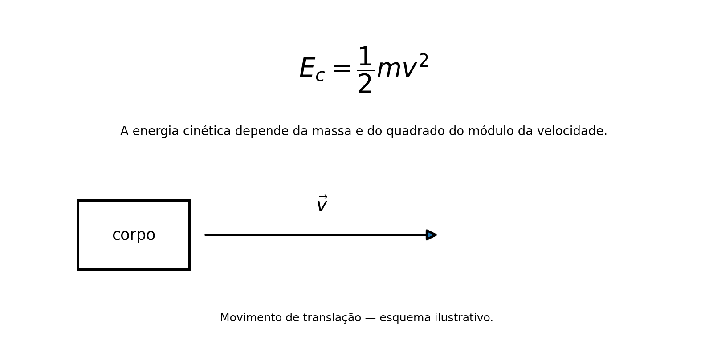
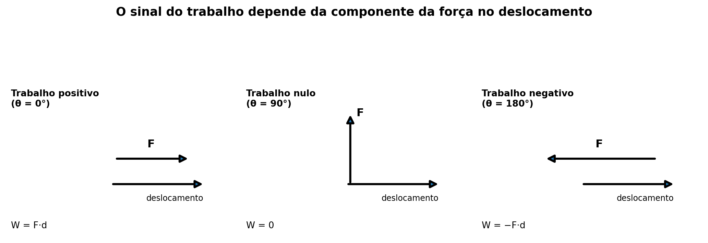

1º Ano | Aula 26: Energia Cinética e Teorema do Trabalho
📚 Resumo
A energia cinética é a energia associada ao movimento de um corpo. Para um corpo de massa $m$ em movimento de translação com velocidade de módulo $v$, $E_c=mv^2/2$. O teorema da energia cinética afirma que o trabalho da força resultante sobre o corpo é igual à variação de sua energia cinética: $W_{\rm resultante}=\Delta E_c=E_{c,f}-E_{c,i}$.
O trabalho resultante positivo aumenta a energia cinética; o negativo a diminui; e o trabalho resultante nulo mantém constante a energia cinética entre os estados considerados. No SI, a energia cinética e o trabalho são medidos em joules (J).
📖 Energia cinética
1. Conceito e expressão matemática
Energia cinética é a grandeza escalar associada ao estado de movimento de um corpo. Na mecânica clássica, para um corpo de massa constante em movimento de translação, sua energia cinética é:
$$E_c=\frac{1}{2}mv^2$$
Em que $m$ é a massa do corpo, em quilogramas (kg), e $v$ é o módulo de sua velocidade, em metros por segundo (m/s). A unidade de energia no Sistema Internacional é o joule:
Como a velocidade aparece elevada ao quadrado, a energia cinética não depende do sentido do movimento: um corpo com velocidade $+v$ e outro com velocidade $-v$, de mesma massa, possuem a mesma energia cinética. Se a velocidade dobra, a energia cinética fica quatro vezes maior; se triplica, fica nove vezes maior.

Figura 1: A energia cinética de translação depende da massa e do quadrado do módulo da velocidade do corpo.
2. Comparações importantes
Para massas iguais, o corpo mais veloz possui maior energia cinética.
Para velocidades de mesmo módulo, o corpo de maior massa possui maior energia cinética.
Um corpo em repouso em relação ao referencial adotado tem $E_c=0$.
A energia cinética depende do referencial, pois a velocidade também depende dele.
A expressão apresentada é a da energia cinética de translação na mecânica clássica, adequada quando as velocidades são muito menores que a velocidade da luz.
📖 Trabalho de uma força e seu sinal
3. Trabalho de uma força constante
Quando uma força constante $\vec F$ atua durante um deslocamento $\Delta\vec r$, o trabalho realizado por essa força é:
$$W=F\,\Delta r\,\cos\theta$$
Em que $F$ é o módulo da força, $\Delta r$ é o módulo do deslocamento e $\theta$ é o ângulo entre a força e o deslocamento. O trabalho é uma grandeza escalar, medida em joules.
$0^\circ\leq\theta<90^\circ$: trabalho positivo; a força possui componente no sentido do deslocamento.
$\theta=90^\circ$: trabalho nulo; a força é perpendicular ao deslocamento.
$90^\circ<\theta\leq180^\circ$: trabalho negativo; a força possui componente contrária ao deslocamento.

Figura 2: O sinal do trabalho depende do ângulo entre a força e o deslocamento.
O trabalho da força resultante é a soma dos trabalhos de todas as forças que atuam no corpo: $W_{\rm resultante}=\sum_i W_i$. Não se deve confundir o trabalho de uma força específica com o trabalho resultante.
📖 Teorema da energia cinética
4. Relação entre trabalho resultante e variação da energia cinética
O teorema da energia cinética estabelece que o trabalho realizado pela força resultante sobre um corpo é igual à variação de sua energia cinética:
O teorema vale para a partícula ou para o movimento do centro de massa sob a força resultante, no contexto da mecânica clássica. É especialmente útil quando se deseja relacionar velocidades e trabalho sem determinar o tempo de movimento.
Figura 3: O trabalho resultante representa a variação da energia cinética entre os estados inicial e final.
5. Interpretação do resultado
$W_{\rm resultante}>0$: $E_{c,f}>E_{c,i}$; o módulo da velocidade aumenta.
$W_{\rm resultante}<0$: $E_{c,f}<E_{c,i}$; o módulo da velocidade diminui.
$W_{\rm resultante}=0$: $E_{c,f}=E_{c,i}$; o módulo da velocidade permanece igual.
O trabalho resultante nulo não exige que todas as forças sejam nulas. Por exemplo, uma força centrípeta perpendicular à velocidade pode alterar a direção do movimento sem alterar o módulo da velocidade e, portanto, sem variar a energia cinética.
6. Procedimento para resolver problemas
Identifique a massa e as velocidades inicial e final.
Converta os valores para unidades do SI.
Calcule $E_{c,i}$ e $E_{c,f}$, ou aplique diretamente o teorema.
Se houver várias forças, determine o trabalho de cada uma e some os trabalhos.
Interprete o sinal do trabalho resultante e confira a unidade em joules.
💡 Física em Ação
Frenagem de veículos
O trabalho negativo da força de atrito dos freios reduz a energia cinética do veículo até que ele pare. A distância de frenagem depende da velocidade inicial e das forças que realizam trabalho.
Esportes e colisões
Em um chute, arremesso ou tacada, o trabalho da força aplicada altera a energia cinética do objeto. O teorema permite relacionar a intensidade do trabalho à velocidade alcançada.
✅ 5 Questões Resolvidas (R 1 a 5)
R 1: Energia cinética de um corpo
Enunciado: Um corpo de massa $4{,}0\text{ kg}$ desloca-se com velocidade de módulo $5{,}0\text{ m/s}$. Determine sua energia cinética.
Resposta: $\boxed{E_c=50\text{ J}}$. A energia cinética é positiva e depende do quadrado do módulo da velocidade.
R 2: Efeito de dobrar a velocidade
Enunciado: Um automóvel de massa $1000\text{ kg}$ passa de $10\text{ m/s}$ para $20\text{ m/s}$. Determine a energia cinética inicial, a final e a variação de energia cinética.
Resposta: $E_{c,i}=50\text{ kJ}$, $E_{c,f}=200\text{ kJ}$ e $\Delta E_c=150\text{ kJ}$. Ao dobrar a velocidade, a energia cinética quadruplica.
R 3: Trabalho resultante e velocidade final
Enunciado: Um corpo de massa $2{,}0\text{ kg}$ possui velocidade inicial de $3{,}0\text{ m/s}$. A força resultante realiza trabalho de $16\text{ J}$. Determine a velocidade final, supondo que o corpo continue no mesmo sentido.
$v_f^2=25\Rightarrow v_f=5\text{ m/s}$, escolhendo o sentido informado.
Resposta: $\boxed{v_f=5{,}0\text{ m/s}}$.
R 4: Trabalho negativo na frenagem
Enunciado: Um carrinho de massa $5{,}0\text{ kg}$ move-se a $8{,}0\text{ m/s}$ e é freado até atingir $2{,}0\text{ m/s}$. Calcule o trabalho da força resultante durante a frenagem.
Resposta: $\boxed{W_R=-150\text{ J}}$. O sinal negativo indica redução da energia cinética.
R 5: Trabalho de forças em conjunto
Enunciado: Um bloco desloca-se horizontalmente por $6{,}0\text{ m}$. Uma força de tração de $20\text{ N}$ atua no sentido do deslocamento, enquanto o atrito exerce força de $5{,}0\text{ N}$ em sentido contrário. Determine o trabalho resultante.
Enunciado: Um bloco desloca-se 3,0 m. Uma força de 30 N atua a favor do movimento e outra de 10 N atua contra. Determine o trabalho resultante, desprezando outras forças com componente no deslocamento.
Resolução: W_R=30·3−10·3=60 J.
P 14: Trabalho nulo
Enunciado: Um corpo realiza movimento circular uniforme sob ação de força centrípeta de 40 N. Explique por que o trabalho instantâneo dessa força é nulo.
Resolução: A força centrípeta é perpendicular ao deslocamento instantâneo; W=F·d·cos90°=0.
P 15: Determinação do trabalho pela variação da velocidade
Enunciado: Um veículo de massa 800 kg reduz a velocidade de 25 m/s para 15 m/s. Determine o trabalho resultante durante a redução.
Resolução: W_R=½·800·(15²−25²)=400·(225−625)=−160 000 J.
🎓 5 Questões de Teste (T 16 a 20)
T 16 (ExataSite): Energia cinética
Enunciado: Um corpo de massa 2,0 kg move-se a 3,0 m/s. Sua energia cinética é:
A) 3 J.
B) 6 J.
C) 9 J.
D) 12 J.
E) 18 J.
Gabarito: C. Resolução: E_c=½·2·3²=9 J.
T 17 (ExataSite): Dependência com a velocidade
Enunciado: Mantida a massa de um corpo, se o módulo de sua velocidade triplica, sua energia cinética:
A) triplica.
B) dobra.
C) fica seis vezes maior.
D) fica nove vezes maior.
E) não se altera.
Gabarito: D. Resolução: E_c é proporcional a v²; portanto, passa a ser 3²=9 vezes maior.
T 18 (ExataSite): Teorema do trabalho
Enunciado: O trabalho resultante realizado sobre um corpo é −80 J. Nesse intervalo, sua energia cinética:
A) aumenta 80 J.
B) diminui 80 J.
C) permanece constante.
D) aumenta 160 J.
E) torna-se necessariamente nula.
Gabarito: B. Resolução: W_R=ΔE_c=−80 J: a energia cinética diminui 80 J.
T 19 (ExataSite): Trabalho e ângulo
Enunciado: Uma força de 10 N atua sobre um corpo que se desloca 4,0 m, formando 60° com o deslocamento. O trabalho da força é:
A) 10 J.
B) 20 J.
C) 40 J.
D) 20√3 J.
E) 40√3 J.
Gabarito: B. Resolução: W=F·d·cos60°=10·4·0,5=20 J.
T 20 (ExataSite): Frenagem
Enunciado: Um automóvel de massa 1000 kg reduz sua velocidade de 20 m/s para 10 m/s. O trabalho resultante é:
A) −150 kJ.
B) −100 kJ.
C) −50 kJ.
D) 50 kJ.
E) 150 kJ.
Gabarito: A. Resolução: W_R=½·1000·(10²−20²)=500·(−300)=−150 000 J=−150 kJ.